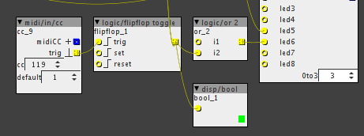

Hi,
I don't know if it's a bug or what. As you can see on the disp/bool , the flipflop toggle seems to be fine. But if I plug it on the led input, that doesn't work.
This is working if I plug it in the "/logic/or 2" and then to the led input.
I tried with "conv/to b" with no luck.
I'm on 1.0.10
